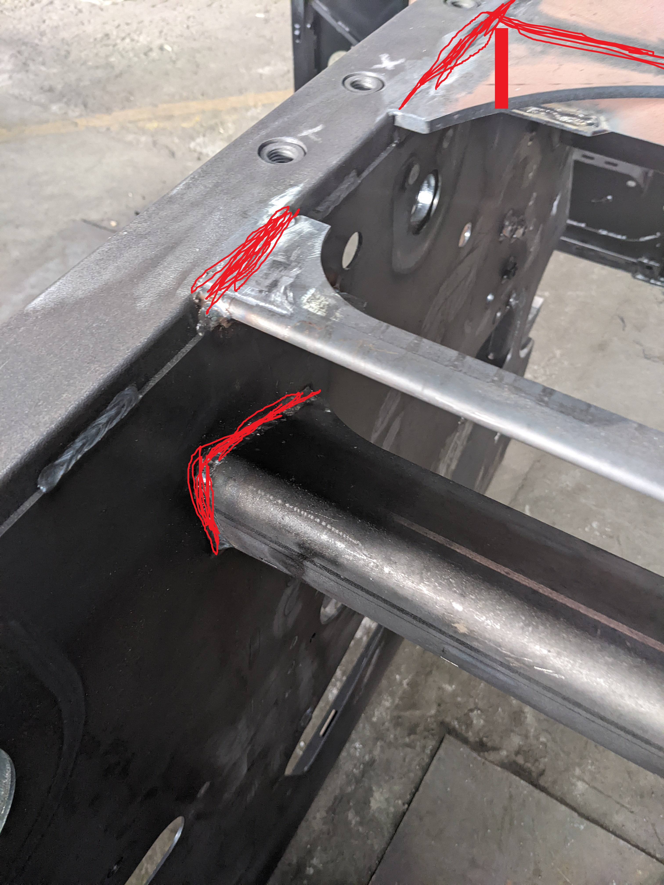
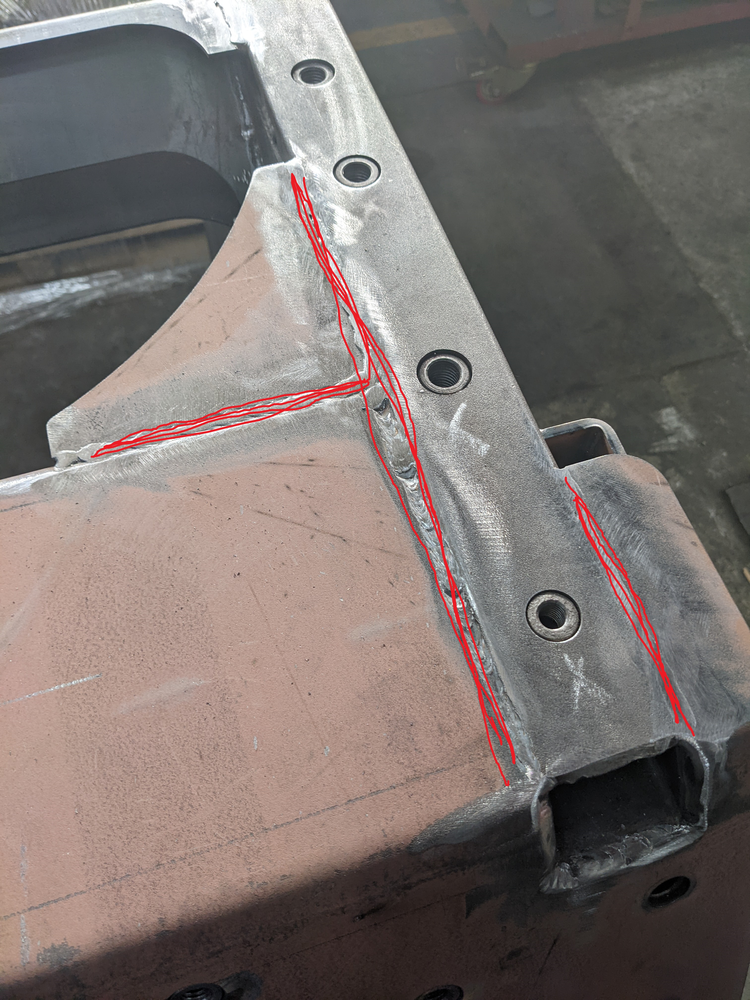
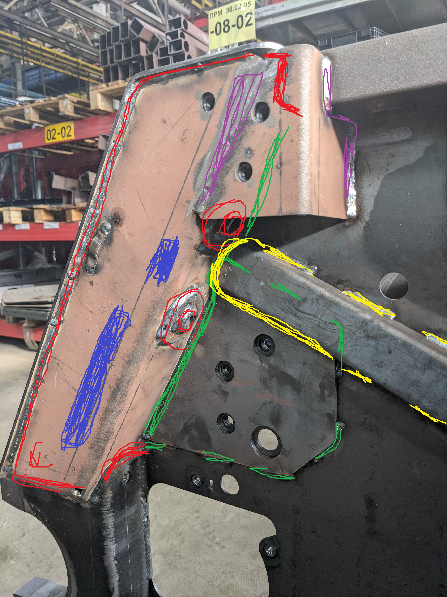
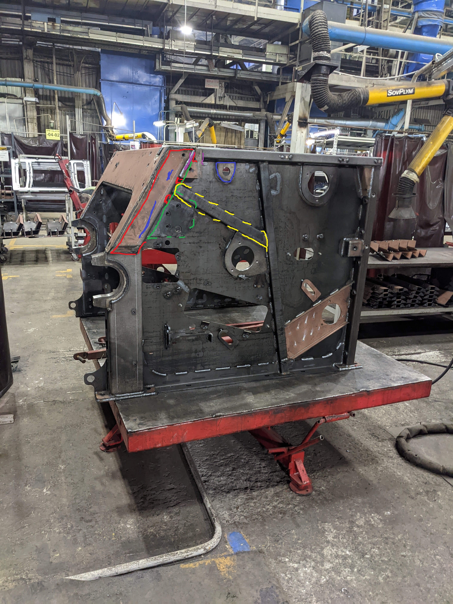
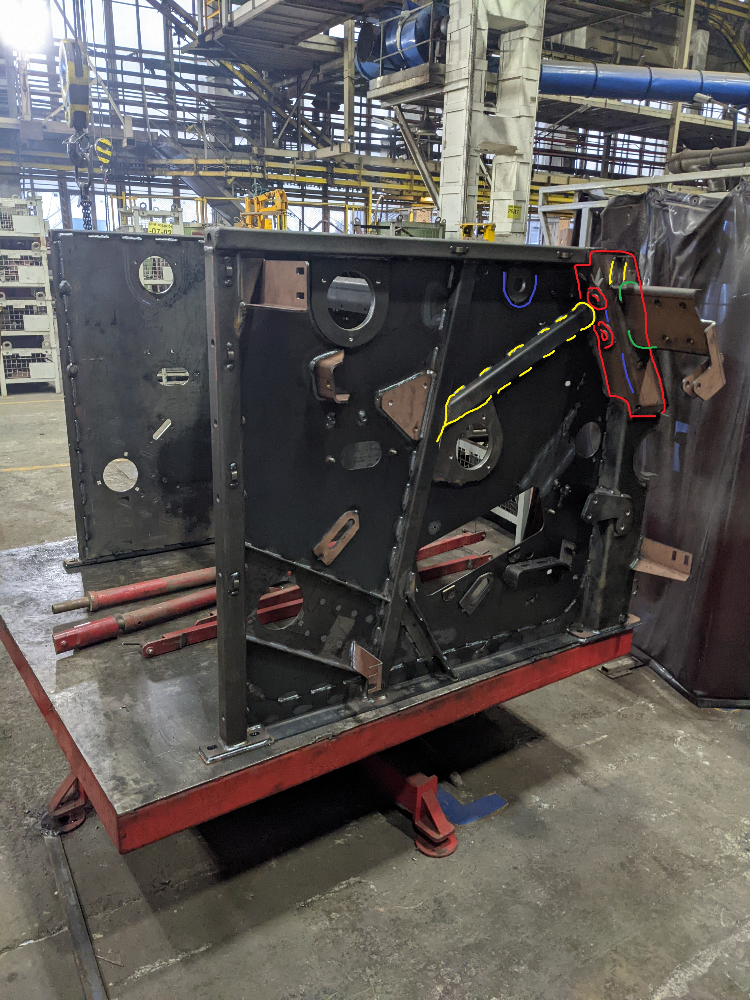

Сборка
- Ставим панели, что бы сели на штыри
- Ставим отсекатель посередине
- Ставим заднюю растяжку(Важно! Зажатой максимально)
- Поджимаем панели
- Ставим кожух
- Выравниваем кожух так, что бы был максимально равен к трубе панели(лио забить кожух, либо приподнять(без фанатизма!) панель
- Вешаем подковы(короткая не прилегает к верхней трубе панели, а длинная почти впритык к трубе)
- Полностью зажимаем панели
- Ставим передню распорку
Сварка переда
- Прихватки на подковах(ВАЖНО!) и на кожухе первоначально подогнув его, чтоб вровень с трубой панели и шов возле бугеля


Сварка середины
- ВАЖНО!Поднять кожух кочергой, на уровень трубы панели и вертикальные швы
- Поставить косынки на уровень с кожухом и сварить
- Заварить отсекатель
- Важно! Разжать панели растяжкой, чтобы шаблон чуть-чуть люфтил
- Ставим щиток, прихватку сверху с одной стороны, и поджать нижнюю чать чтобы (ВАЖНО!) зазор между отверстием и щитком был пару сантиметров
- Варим швы


Сварка панели 1
- Шов на лопатке где кожух сходится с панелью (синий)
- Шов между двумя трубками
- Подкову покругу
- Ставим коробку обваримаев НЕ полностью(крысный)
- закрываем трубки обвариваем (красный)
- ставим треугольник по отверстиями, обвариваем(зеленый)
- ставим жесткость, прихватываем и обвариваем, зазоров между панелью и трубой быть не должно(желтый)
- ставим уголок и обвариваем(фиолетовый)


Сварка панели 2
- Шов на лопатке где кожух сходится с панелью(синий)
- Шов между двумя трубками
- Подкову, без верхнего шва
- коробку обвариваем поностью(красный)
- закрываем трубки и обвариваем(красный)
- кронштейн вставляем в коробку, параллельно кожуху, обвариваем(зеленый)
- вставляем жесткость, прихватываем, выгибаем панель по надобности, чтобы не было зазоров, обвариваем(желтый)
- Кронштейн ставим по фаске, обвариваем

Сварка внутри
- Приварить шпильки 8шт
- Отсекатель обварен по кругу
- По диагонали вниз щиток
- Кнопочные швы
- Кожух должен быть обварен полностью
- ВАЖНО! Вогнуть кувалдой панели во внутрь, по неоходимости. Могут быть уже вогнуты
- ВАЖНО!Компенсационные швы
- ВАЖНО!Проверить шпильки
- ВАЖНО!Выровнять панели